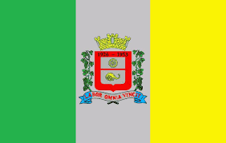

Hino da Cidade de Ferraz de Vasconcelos

Voltar para Página Principal
És linda e querida cidade
Da nossa grande nação;
Teu nome, Ferraz de Vasconcelos.
É a mais terna e doce canção!
Que orgulho, ser ferrazense.
Ser desta cidade ditosa,
E poder gritar altaneiro
Meu berço é esta terra formosa
Encanto és dos teus filhos,
Por todos és respeitada;
Altiva no teu progresso
Serás sempre a mais procurada
Sob o teu céu anilado
Procuras agasalhar
Aos nossos irmãos brasileiros
E estrangeiros que aqui
Vêm morar.
Teu solo rico e fértil,
Pioneiro na produção
Da doce "UVA ITÁLIA",
À riqueza do nosso torrão!
Nossa muito amada Ferraz
Bom Jesus te abençoou;
Sobre os teus montes e vales,
Muitas graças e luz derramou!